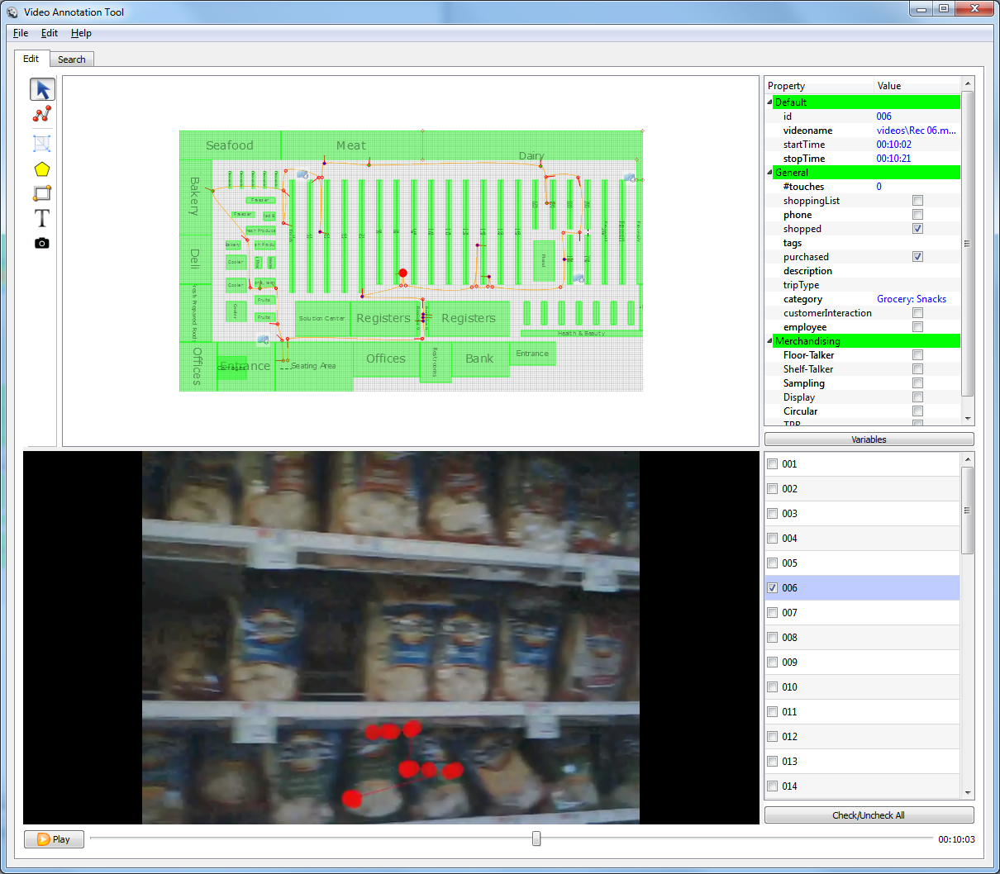

The visual interface as presented in the image below consists of four main areas: track preview area, video area, path list and field viewer.

Two types of objects are shown in this area: the floorplan and any tracks selected within the path list. Objects in green represent various fixtures in the floorplan layout and may contain the name of a corresponding fixture.
Tracks are shown as circular nodes connected via line segments and represent a path travelled by one person on the floorplan. The nodes filled with green represent a purchase and blue - a product interaction. While playing back the video a larger red-disk is moving along the track to show a current position of the customer.
Track preview area and video area can be resized by dragging the splitter between them.
The area can be zoomed in and out with a mouse wheel (scroll pad). It can also be panned when the cursor shows a hand. If the cursor is an arrow it is over on object to be selected. Clicking on the node will make it current and show its properties in field viewer on the right
While the video is played back, the red disk moving along the path will indicated the current position of the track. The variables in the Field Viewer will also update to reflect the current state
Play/pause video or use the slider to jump to a specific time. Time is shown on the right. Space anywhere in the window to play/pause. Press Ctrl-R to enter video playback rate: from 0.2 to 100 (1 is normal speed). Press F11 to toggle video view between normal and maximized.
Use left/right arrows to REW/FF 1 sec and Ctrl+left/right arrows to REW/FF 5 sec.
Lets you preview the attributes of each selected node in the track. Each node corresponds to a location on the map and also to a certain time in the video. The variables reflect various demographic and merchandising information as well as link to product categories if any product interaction took place at that time.
The track list on the bottom right allows you to show/hide Path objects in the drawing area (checkboxes).
Filter button displays a dialog which allows you to show/hide Path objects in the drawing area based on their field values. Multiple values can be selected by Ctrl+Click or Shift+Click (to select a range).